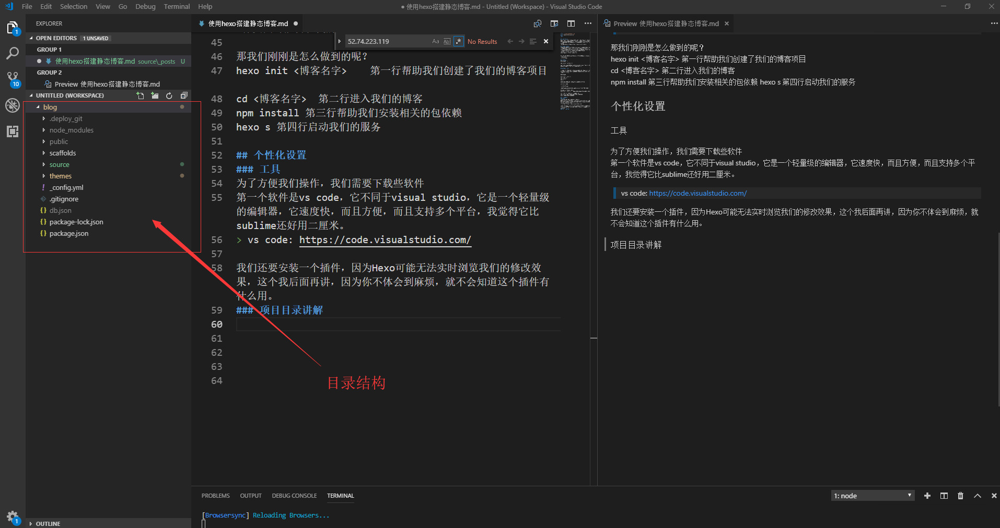

什么是Hexo?
Hexo 是一个快速、简洁且高效的博客框架。通过Hexo框架能够把我们Markdown语法完成的页面，生成静态博客。配合Github我们就可以部署自己的网站了，而且Hexo有很多好看的主题，省去很多不必要的麻烦。
Hexo官方文档（中文）：https://hexo.io/zh-cn/docs/
安装相关的环境
我们要在我们的电脑上安装两个软件，一个是我们常用的Git、另外一是我们的node.js，git不用多说，代码托管的软件，node.js是Javascript的一种运行环境，通过node.js我们可以让Javascript不仅在浏览器中运行，还可以直接运行在服务器上。
git网址： https://git-scm.com/
node.js网址： http://nodejs.cn/
输入以下两行命令确保git和node.js安装已经完成，注意node.js输入的是node：
安装Hexo
在控制台输入：npm install -g hexo-cli
npm是node.js自带的包管理工具，因为node.js本身是一个很轻量级的工具，我们通过安装插件来使得它变得强大
创建一个博客
我们这里假定你已经拥有了windows命令行相关的知识，如果你是电脑爱好者，可以百度搜索一些命令来完成文件的删除和复制等基础操作，这不是很难
在控制台输入hexo init <博客名字>
cd <博客名字>
npm install
hexo s
现在我们已经完成了博客的创建，我们在浏览器中输入:127.0.0.1:4000
你页面可能会和我的有些不一样，因为我是修改过主题的。
那我们刚刚是怎么做到的呢？
hexo init <博客名字> 第一行帮助我们创建了我们的博客项目
cd <博客名字> 第二行进入我们的博客
npm install 第三行帮助我们安装相关的包依赖
hexo s 第四行启动我们的服务
个性化设置
工具安装
为了方便我们操作，我们需要下载些软件
第一个软件是vs code，它不同于visual studio，它是一个轻量级的编辑器，它速度快，方便，而且支持多个平台，我觉得它比sublime还好用二厘米，它的node.js插件是真的好用
vs code: https://code.visualstudio.com/
我们还要安装一个插件，因为Hexo可能无法实时浏览我们的修改效果，这个我后面再讲，因为你不体会到麻烦，就不会知道这个插件有什么用。
项目目录结构讲解
我们把Hexo直接拖到vscode中来，下面开始讲解每个目录的功能

node_modules
这个是模块目录，也就是相关的插件，我们一般不用关心，都是系统生成的。
public
我们生成的静态文件就存在在这里（这个是我们要关心的，我们如果要部署我们的网站到web服务器上时，直接把这个目录的文件拖过去就行了）
source
用来存在我们的资源文件（这个也是我们要关心的，我们在_posts写我们的markdown文件，然后使用 “hexo g” 命令，就可以生成静态页面
_config.yml
极为重要，这个文件是我们的配置文件，通过修改它，你可以修改一些全局的属性，比如网站的title
工作流程（重点)
这一节很重要很重要，我们写博客是拿来用的，而不是摆着看的。所以我们先来了解一下Hexo的工作流程。
step 1:
使用markdown语法编写页面（使用hexo new <页面名字>命令，系统就直接在source/_posts文件下会生成了<页面名字>.md文件，我们在这里面编写就行了）
markdown语法我们很容易通过百度学习
step 2:
渲染，也就是前面说的使用 “ hexo g “ 在public下生成静态页面。
step 3:
部署，将我们的页面部署到服务器上（我们可以使用 “ hexo s “ 命令在本地查看
Hexo-Browsersync插件
使用几次上面的步骤，我们就可以理解Hexo的工作流程了。我相信你很快就会发现，每次我们修改或者增加一些东西，都得先把服务停下来（使用ctrl + c）这一点很麻烦，不过，幸运的是我们有插件。
进行项目目录
npm install hexo-browsersync --save |
启动服务$ hexo s
出现这个页面就证明你成功了，不过要注意，我们访问网页的页网的端口号是4000不是3001
修改主题
好了，到这一步，相信你已经掌握了如何使用Hexo了，不过，你肯定不满足于官方的主题，你想大干一场
官方主题下载网址：https://hexo.io/themes/
每个主题都有修改教程，我这里就不重复了。
解决Markdown图片问题
我目前所知道的，一共有两种解决方案，第一种是通过七牛云构建图床，这个方法较为麻烦。第二种方法只要更改一个属性就可以了。我来讲第二种。
step1
打开_config文件，找到post_asset_folder: false
修改成true，以后你创建一个博客页面时，就会在目录下同时生成一个同名的资源文件，然后把你的图片放在这个文件夹下，使用时，直接按名字引用即可。!()[资源文件名字.文件格式]
使用Github Pages（待更新）
接下来我们要把我们的静态博客发布到网上，我们有很多种解决方案，我们可以通过购买服务器，然后使用服务器上的web服务，不过，这里我推荐一种免费的方面，也就是Github pages，我们可以直接通过它来构建静态网站。
Github pages官方链接： https://pages.github.com/
注册Github帐号
github网址：https://github.com
首先我们要注册一个Github帐号，这个很简单。
新建一个仓库
我们在github上新建一个仓库名字是<你的用户名>.github.io
##使用讨论系统（待更新）